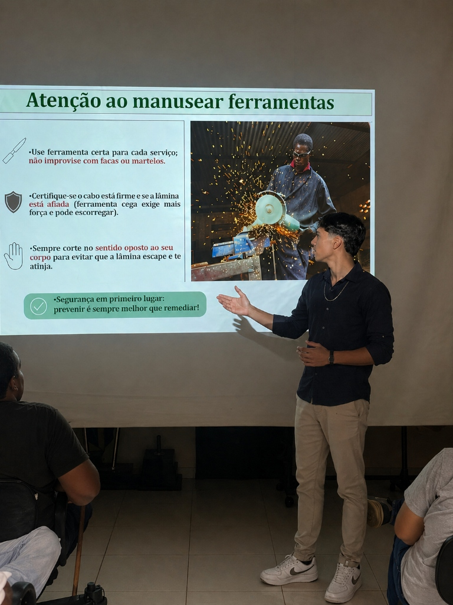

Desenvolvo soluções completas, automatizo processos
e integro tecnologias para aumentar eficiência, reduzir custos
e impulsionar o crescimento de empresas.
Especialista em automações
e soluções escaláveis.
Iniciei minha jornada com um objetivo claro: transformar complexidade em eficiência. Entendi cedo que tecnologia não é apenas sobre linhas de código, mas sobre gerar valor real para negócios e usuários.
Hoje, foco em construir ecossistemas digitais que escalam, unindo precisão técnica com uma execução ágil e focada em resultados extraordinários.
const desenvolvedor = {
foco: "Arquitetura e Escala",
lema: "Menos código, mais impacto."
};Criando soluções globais.

Fluxos autônomos que eliminam trabalho operacional.
BI focado em decisão estratégica e dados reais.
Arquitetura robusta para grandes ecossistemas.
Implementei uma arquitetura robusta que reduziu o tempo de resposta entre o reporte e a resolução em mais de 40%. A interface oferece uma visualização clara através de dashboards de alto impacto.
Integração total com o Centro de Comando via Supabase, permitindo sincronização instantânea de dossiês de risco complexos gerados em campo.
Substituímos o papel por um checklist inteligente que documenta avarias e sincroniza assinaturas digitais com o escritório instantaneamente.
Interface projetada para dispositivos móveis operados sob luz solar direta, com fluxos passo a passo e legibilidade otimizada para técnicos de campo.
Disponível para consultoria e projetos de alto impacto.